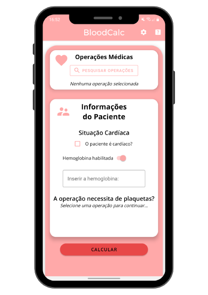
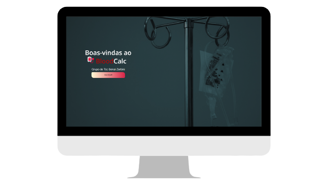

BloodCalc
Calculadora de bolsas de sangue
Um sistema inteiramente inédito, o BloodCalc surgiu com a idéia de ajudar profissionais da saúde. O aplicativo visa a otimização na prescrição de hemocomponentes para as reservas de procedimentos cirúrgicos, auxiliando assim ao médico quanto a quantidade de concentrado de hemácias a ser prescrita para cada procedimento.
Nossa história Processo de desenvolvimento ExperimenteHistória
Tudo começou com a reunião dos grupos para o TCC do curso Técnico em Desenvolvimento de Sistemas. Não demorou muito e meu grupo
encontrou a ideia perfeita, que mais tarde a chamaríamos de BloodCalc.
Após um dos integrantes do grupo conversar com familiares que trabalham em bancos de sangue, foi informado a necessidade de uma maneira automatizada
e simplificada de se realizar os cálculos necessários para a reserva e utilização correta das bolsas, evitando ao máximo o desperdicio de um recurso
que depende totalmente de doação voluntária.
Aceitamos logo o desafio e mergulhamos de cabeça em pesquisas sobre o assunto, desenvolvendo os cálculos necessários sempre com a ajuda técnica
e profissional e, em 6 meses, as primeiras versões do site e app estavam prontas para serem apresentadas e utilizadas.
Com a apresentação concluída, a banca nos sugeriu à participar do programa INOVA do SENAI, aonde vários alunos da rede SENAI participam de um concurso
com seus projetos, podendo se tornar uma start-up dependendo de sua colocação. Infelizmente, por conta do período do curso que estavámos matriculados,
não podemos participar.
Esta é a história do BloodCalc, um sistema inédito no mercado que entrega todas as informações de forma rápida e precisa. Automatizado e simplificado. Evitando assim gastos desnecessários aos hospitais e o desperdício de hemocomponentes
Processo de desenvolvimento

Planejamento
O projeto foi feito com base na metodológia agíl SCRUM. A cada Sprint (4 semanas), é feita uma reunião para planejar os próximos passos, além de uma reunião diária para atualizar os demais integrantes do que foi feito nos últimos dias e distribuir as novas tarefas.
Desenvolvimento - Android
O BloodCalc foi planejado para ser usado em dispositivos movéis, por serem de fácil acesso no mundo moderno, possibilitando que os usuários o utilizassem de forma privada e rápida, sem a necessidade de utilizar um computador do local de trabalho.
Com isso, começamos a produção de um aplicativo Android utilizando-se a linguagem Java. Para armazenamento de dados de cirurgias, foi utilizado o banco de dados Cloud Firestore, da Google, visando um de nossos requisitos: o baixo consumo de armazenamento dos celulares.


Desenvolvimento - WEB
Mas como ficaria os usuários de outros sistemas operacionais? Sem experiência com desenvolvimento para iOS ou aplicativos multi-plataforma, recorremos à produção de um website, que poderia ser utilizado do navegador do celular. Com isso, abrimos o leque de possibilidades de utilização do sistema: o aplicativo nativo Android, a partir de um navegador de seu iOS ou Android e também de um navegador para seu desktop.
Produzido com HTML, CSS e JavaScript, o site contém as mesmas funcionalidades do aplicativo porém com um extra: o site também possuí um pouco da nossa história, objetivos e o contato com os desenvolvedores.
Identidade
A identidade visual do BloodCalc sempre teve um objetivo, ser algo simples. As cores foram escolhidas a dedo como cores fracas e que trouxessem tranquilidade, visto que um usuário pode utilizar o app em situação de tensão.
A cereja do bolo, a logotipo, foi algo produzido após a apresentação da versão inicial. Inicialmente uma imagem da internet, a logo atual foi criada exclusivamente para o BloodCalc, pensada e desenhada para ser algo minimalista e com traços suaves, chamando a atenção pela sua beleza mas sem roubar a atenção principal do médico. Você pode conferir mais trabalhos da designer por trás da logotipo clicando aqui.
Conheça o BloodCalc
Android*
 Assistir a demonstração*Infelizmente, a versão Android do BloodCalc não está disponível para download.
Web
Volte mais tarde para conferir a versão WEB do BloodCalc.